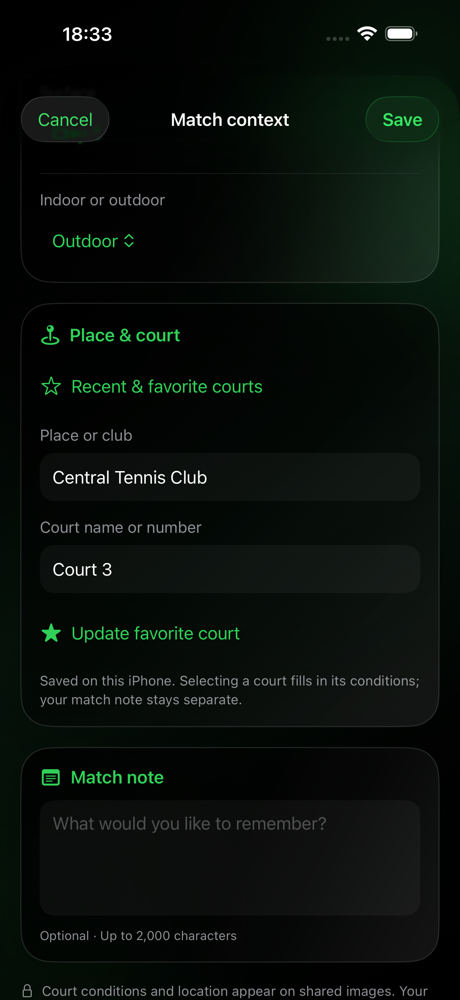
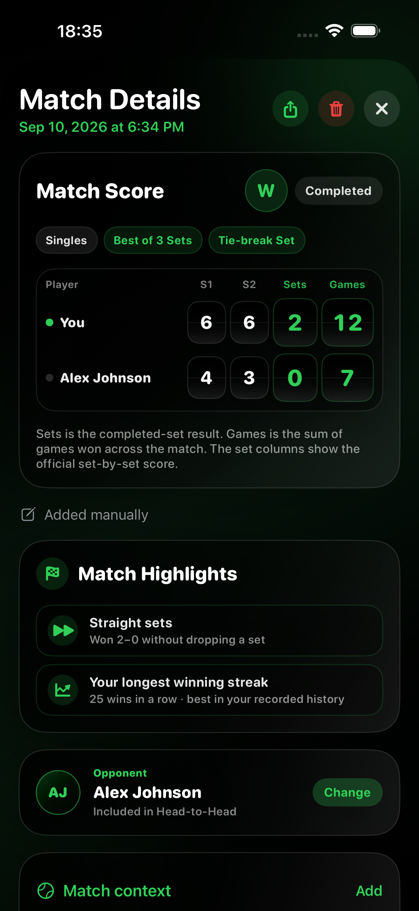
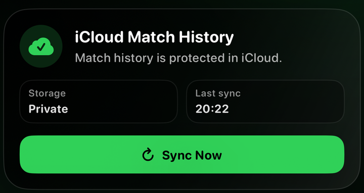

Play
Keep score courtside on Apple Watch.
BUILT FOR TENNIS PLAYERS WITH APPLE WATCH
Score on Apple Watch. Add and edit played matches, review statistics, Rivalries and highlights on iPhone — privately synchronised through iCloud.
Pro includes both apps. No separate Standalone purchase is needed.
Requires iOS 26.0 or later and Apple Watch

Keep score courtside on Apple Watch.
Your saved match moves privately through iCloud.
See results and performance clearly on iPhone.
THE COMPLETE PRO EXPERIENCE
Pro is a complete product, with both apps included in one purchase. Use Apple Watch during play and iPhone to add results, explore your history and share your progress.
Tennis Score Wizard (Standalone) is the separate Watch-only option. You do not need to buy it to use Pro.
ON COURT · APPLE WATCH
Score singles or doubles with serving guidance, Undo and side-change reminders. Start from familiar rules or configure a Custom Set.
One Set, Best of 3 or Best of 5. Advantage sets, tie-break sets and official Short Sets. Standard games or No-Ad, plus a deciding Match Tie-Break to 7 or 10.
Custom Set lets you choose the game target, winning margin, tie-break starting score and point target. Keep the full set-by-set result in your history.
Review results and available statistics. Filter by year, month and singles or doubles, with progressive loading for larger histories.


MATCH HIGHLIGHTS · IPHONE
Comebacks, tense tie-breaks, milestone wins and personal records. Match Highlights brings out notable moments when your saved match data supports them.

26 types, shown in 44 card variations. These examples represent different scenarios, not a single match. Select the image to enlarge it.

PLAYED MATCHES · IPHONE
Add a completed or stopped match, including a tied result. Enter set scores and optional tie-break points, then correct the timing, rules or score later without recreating the match.

Use start and end times, including dates across midnight, or an end time and optional duration. Corrections sync to the same match in Watch history.

Add surface, indoor or outdoor conditions, venue, court and a private note. Reuse recent and favourite courts saved on your iPhone.

Manual matches are labelled on iPhone and Watch. Point-by-point and workout statistics are shown only when recorded; no missing data is invented.
Watch-recorded scores are protected from manual editing. Opponent assignment and court context can be updated separately, including for older matches.
RIVALRIES · IPHONE
Create saved player profiles with a full name, short Watch name and private notes. Choose an opponent before a singles match or assign a previous result later.

Keep your singles meetings in a private Head-to-Head record.

Compare recent form, wins, sets, games and tie-break results.

Explore available serve, return, break-point and workout comparisons.
CALENDAR · STATS · TRENDS
Browse the monthly calendar or full-year overview. Filter statistics from the last seven days to all time, separate singles and doubles, and follow your performance across matches.

Find past matches and see when you have been on court.

Review win rate, streaks, court time and available point, serve and return statistics.

Explore rolling trends and monthly activity, then share a visual summary.
APPLE HEALTH
Optionally record a tennis workout on Apple Watch. With permission, see live heart rate and review duration, average and maximum heart rate, and active energy. Saved workouts also appear in Apple Health and Fitness.

PRIVATE SYNC
Transfer matches between paired Watch and iPhone apps, and sync saved history through private iCloud using the same Apple Account. No Tennis Score Wizard account is required, and match data is not sent to developer-operated servers.

READY ON YOUR WRIST
Add a complication for quick access to the Watch app. Keep scoring, history, available statistics and optional workouts together on Apple Watch.

BEFORE YOU START
No. Pro includes the complete Apple Watch app and iPhone analysis in one purchase. Tennis Score Wizard (Standalone) is a separate option for people who want the Watch-only product.
The iPhone app requires iOS 26 or later; the included Watch app requires watchOS 26 or later. Live scoring and workout recording use Apple Watch. You can add and review manually entered matches on iPhone.
For manually added matches, you can correct the date, timing, rules and score. The updated record syncs to Watch history. Watch-recorded scores cannot be edited manually. Opponent assignment and match context have separate controls.
Match cards can include the full set score, tie-break details, available statistics, up to six qualifying highlights and optional court details. Private match and player notes are excluded. Highlights and records are based on supporting saved data, not on court details.
No. Pro is a one-time purchase that includes both apps. Optional tips support development and do not unlock extra features. See the App Store for the current price in your region.
ONE-TIME PURCHASE
Score on Apple Watch. Add, review and share on iPhone. Both apps included. No subscription.